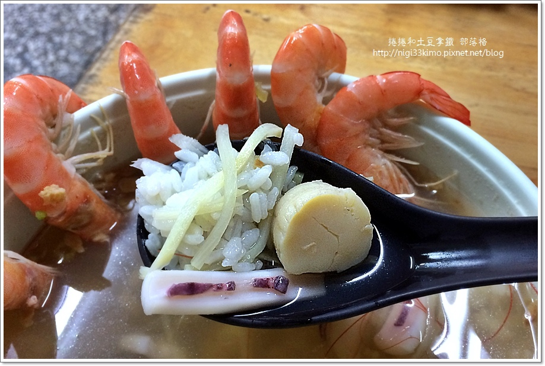
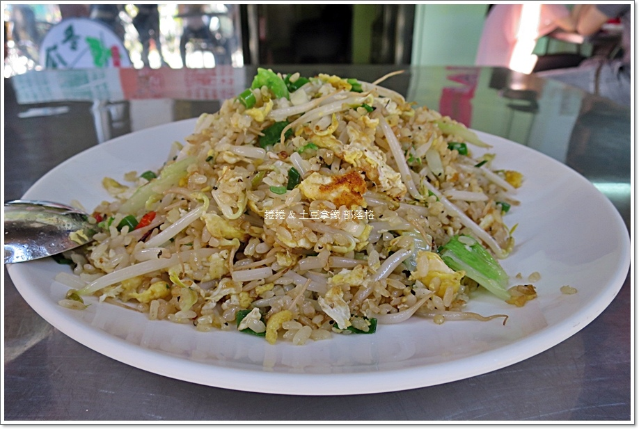

香味 海產粥 脆皮臭豆腐~高雄最熱門必吃小吃

這間店在高雄地區，幾乎已是無人不知、無人不曉的知名小吃店，也是許多人來到高雄旅遊，指名必吃的高雄小吃美食。因此，每天只要一開始營業，就有一堆人開始排隊的景象。
尤其每到晚餐用餐巔峰時間，更是大排長龍，
連車子多到都得雙併排，也成為交警最愛來開單的熱點
這海產粥屬於台式口味，這種粥就是我們南部人俗稱的『飯湯』，
將煮好的米飯加上各種配料，稍微煮一下，
保留米飯的口感，又融合其他食材的味道。
能夠感受到分明的米粒，湯頭儘是釋放出的海產鮮味
內容物非常豐盛，蝦子就有6隻。
其他還有小卷、干貝、蟹肉、鮮蚵、...等。
「香味」的海產粥份量頗足，若不想吃米飯，也能換成麵線，
或是不加飯，純湯及海鮮料而已。
而小卷、蟹肉、鮮蚵和蝦子等海鮮，也能用「嗆」的方式做成綜合鹽蒸，
只需淋少許酒煮到湯汁收乾，撒上胡椒鹽和蔥花、蒜末，亦能吃出鮮味
CRIS Steakhouse 郭家肉粽~禁得起時間考驗的老味道
 位於高雄鹽埕區的「郭家肉粽」，從民國40年就開始賣肉粽，至今已超過六十年的歷史，店門招牌就是一個大蒸籠裝滿了粽子。以前曾路過幾次，但因為沒有特別留意，所以，若不是好友這次帶我們來，
還不曉得這家這麼有名，生意這麼好。
我覺得呷粽就是一定要淋醬和花生粉！
這裡的醬汁有淡淡的鹹甘味，讓粽子變得更加地濕潤，
而花生粉則添增了一股香氣，
餡料雖只有豬肉塊、鹹鴨蛋，但是我認為簡簡單單的，反而更能體會吸收了粽葉香氣的糯米滋味。好吃!
重口味者，還可加店家自製的辣椒醬，增添風味
位於高雄鹽埕區的「郭家肉粽」，從民國40年就開始賣肉粽，至今已超過六十年的歷史，店門招牌就是一個大蒸籠裝滿了粽子。以前曾路過幾次，但因為沒有特別留意，所以，若不是好友這次帶我們來，
還不曉得這家這麼有名，生意這麼好。
我覺得呷粽就是一定要淋醬和花生粉！
這裡的醬汁有淡淡的鹹甘味，讓粽子變得更加地濕潤，
而花生粉則添增了一股香氣，
餡料雖只有豬肉塊、鹹鴨蛋，但是我認為簡簡單單的，反而更能體會吸收了粽葉香氣的糯米滋味。好吃!
重口味者，還可加店家自製的辣椒醬，增添風味
PAVO Lounge Bistro喬品賣炒飯~網路票選全台十大好吃炒飯

去年蕃薯藤網站曾舉辦了一個「全台十大最好吃炒飯」排行的票選活動，其評選方式為秘密客佔40%，網友投票占60%，選出網友心目中全台十大最好吃蛋炒飯！
其中位在高雄的就有兩家，而這兩家也一直放在捲捲的口袋名單中許久，
雖曾有想過去用餐的機會，但不是遇到店家已經賣完打烊，
不然就是人山人海的排隊人潮，所以一直沒機會品嚐到。
這次是因為平日，我們剛好中午都有空，
我想到「喬品賣炒飯」這家店可以預約，所以立即打電話預約了，
我仔細看盤中的米飯，
顆粒比起一般米小一些且硬一點，口感粒粒分明、乾鬆。
上桌時鑊氣足、口感不濕黏含油，
可能有些客人會不喜歡這樣太乾的口感，就看個人的喜愛喔！
不過我個人不愛黑胡椒的味道，
下次若有機會再訪我會特地提醒不要放胡椒粉